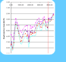
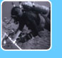

|
Publications
Recent peer-reviewed publications and reports
Continental Shelf Research
Quan, S., R.G. Kvitek, D.P. Smith, G.B. Griggs (2013). Using vessel-based LIDAR to quantify coastal erosion during El Niño and Inter-El Niño periods in Monterey Bay, California. J. of Coastal Research: 55-565.
[PDF]
Continental Shelf Research
Davis, A.C.D., R.G. Kvitek, C.B.A. Mueller, M.A. Young, C.D. Storlazzi, E.L. Phillips (2013). Distribution and abundance of rippled scour depressions along the California coast. Continential Shelf Research Volume 69: 88-100. [PDF].
Marine Ecology Progress Series
Hallenbeck, T.R., R.G. Kvitek, J. Lindholm (2012). Rippled scour depressions add ecologically significant heterogeneity to soft-bottom habitats on the continental shelf. Mar. Ecol. Progr. Ser. Vol. 468: 119-133. [PDF].
International Association of Sedimentologists (IAS), Special Publication (44)
Barnard, P.L., Erikson, L.H., Rubin, D.M., Dartnell, P. and Kvitek, R.G.
(2012). Analyzing bedforms mapped using multibeam sonar to determine regional
bedload sediment transport patterns in the San Francisco Bay coastal system.
Sedimentology, In: Li, M.Z., Sherwood, C.R., and Hill, P.R. (Eds.),
Sediments, Morphology and Sedimentary Processes on Continental Shelves:
Advances in technologies, research and applications. 440 pp.
Hydrobiologia
Iliffe, T.M., R. Kvitek, S. Blasco, K. Blasco, R. Covill. (2011). Search for Bermuda's deep water caves. Hydrobiologia, DOI 10.1007/s10750-011-0883-1. [PDF]
J of Exper. Marine Biology & Ecology
Young, M.A., R.G. Kvitek, P.J. Iampietro, C.D. Garza, R. Maillet, R.T. Hanlon. (2011). Seafloor mapping and landscape ecology analyses used to monitor variations in spawning site preference and benthic egg mop abundance for the California market squid (Doryteuthis opalescens). JEMBE, Vol. 407: 226-233. [PDF]
Geo-Marine Letters
Barnard, P.L., L.H. Erikson, R.G. Kvitek.. (2011). Small-scale sediment transport patterns and bedform morphodynamics: new insights from high-resolution multibeam bathymetry. Geo. Mar. Lett. DOI: 10.1007. [PDF]
Marine Ecology Progress Series
Young, M.A., P.J. Iampietro, R.G. Kvitek, C.D. Garza. (2010). Multivariate bathymetry-derived generalization linear model accurately predicts rockfish distribution on Cordell Bank, California, USA. Mar. Ecol. Progr. Ser. Vol. 415: 247-261. [PDF]
Marine Geodesy
Iampietro, P.J., M.A. Young, R.G. Kvitek. (2008). Multivariate prediction of Rockfish habitat Suitability in Cordell Bank National Marine Sanctuary and Del Monte Shalebeds, California, USA. Marine Geodesy, Vol. 31(4): 359-71. Marine Ecology Progress Series 367: 35-47. [Abstract link]
Marine Ecology Progress Series
Kvitek, R.G., J.D. Goldberg, G.J. Smith, G.J. Doucette, M.W. Silver. (2008). Domoic acid contamination within eight representative species from the benthic food web of Monterey Bay, California. Marine Ecology Progress Series 367: 35-47. [PDF]
Marine Geology
J.P. Xu, Florence L. Wong, Rikk Kvitek, Douglas P. Smith, Charles K. Paull. 2008. Sandwave migration in Monterey Submarine Canyon, Central California. Marine Geology 248: 193-212.
Abstract
Repeated high-resolution multibeam bathymetric surveys from 2002 through 2006 at the head of the Monterey Submarine Canyon reveal a sandwave field along the canyon axis between 20 and 250 m water depth. These sandwaves range in wavelength from 20 to 70 m and 1 to 3 m in height. A quantitative measure was devised to determine the direction of sandwave migration based on the asymmetry of their profiles. Despite appreciable spatial variation the sandwaves were found to migrate in a predominantly down-canyon direction, regardless of season and tidal phases. A yearlong ADCP measurement at 250 m water depth showed that intermittent internal tidal oscillations dominated the high-speed canyon currents (50–80 cm/s), which are not correlated with the spring–neap tidal cycle. Observed currents of 50 cm/s or higher were predominantly down-canyon. Applying a simple empirical model, flows of such magnitudes were shown to be able to generate sandwaves of a size similar to the observed ones. [PDF]
Geological Society of America
Smith, D.P, R.G. Kvitek, P.J. Iampietro, J. Astilla and B. Spear. 2007. Rapid slope evolution follwoing the 70,000 m3 2003 Astilla slide in Monterey Canyon. GSA Abstracts with Programs, v. 39, no. 6, p.71.
Abstract
Time serial multibeam bathymetryTime serial multibeam bathymetry data with high spatial precision are used to evaluate the geomorphic evolution of the Monterey Canyon head. Nine bathymetric surveys conducted between September 2002 and Fall 2006 document sand wave migration, net excavation of the canyon axis, gully head extensions, and a submarine landslide. During the 29 months between Fall 2002 and Winter 2005, the canyon grew in volume 1,000,000 m3 ± 700,000 m3, at an average annual rate of 400,000 m3/a ± 300,000 m3/a. The most significant processes were lateral erosion and vertical incision of the canyon axis. This net loss of substrate during the 29-month period is divided between local erosion of 1,400,000 m3 and local deposition of 350,000 m3.
A new submarine landslide was found on a 30 degree canyon wall at a depth of 130 m by comparing bathymetric surveys separated by only six months (March 2003 and September 2003). In September 2003 the slide scar was 50 m wide, 165 m long, and 8 m deep (average slope-perpendicular thickness). The scar had a 70,000 m^3 volume, and the debris pile had a volume of only 52,000 m^3, suggesting that 18,000 m^3 debris was transported down-canyon following the slide. By February 2005 the scar had grown approximately 30% to 100,000 m^3 by increases in width, length and depth. During the same time frame, the debris pile diminished to 11,000 m^3, leaving 88,000 m^3 of debris removed from the toe of the slide. Paleo-tsunami reconstructions based upon present day scar volumes may be in error if significant enlargement is common in submarine landslide scars.
Photos from an ROV reconnaissance in Fall 2006 indicate that the canyon wall in the slide scar is well stratified. Shallow cores show that the slide material is mainly poorly consolidated mudstone. The ROV data indicate that the toe of the canyon wall near the toe of the slide is cleanly excavated and undercut. Apparently erosion of the toe of the slope is the mechanism for slide generation in this part of the canyon.
Marine Geology
Smith, D.P, R.G. Kvitek, P.J. Iampietro, K. Wong. 2007. Twenty-nine months of geomorphic change in upper Monterey Canyon (2002-2005). Mar Geo, 236: 79-94.
[This article is published by an Elsevier journal and requires that articles be requested rather than openly posted on the internet. This reprint can be found on the Science News Direct website at this link. You may also request a copy from the authors via email]
Abstract
Time serial multibeam bathymetry is used to evaluate geomorphic trends and submarine processes in the upper 4 km of Monterey Canyon, California. Seven high-resolution bathymetric surveys conducted between September 2002 to February 2005 show that the upper canyon axis and head grew in volume 1000000 m3 ±700000 m3, at an average annual rate of 400000 m3/a±300000 m3/a through lateral erosion and vertical incision. This net loss of substrate during the 29-month period is parsed between local erosion of 1400000 m3 and local deposition of 350000 m3. A submarine landslide with a scar void volume of 70000 m3 and debris pile of 52000m3 occurred between March 2003 and September 2004. During the subsequent months until February 2005, the slide scar grew 40% in volume while the debris pile shrank by 80%. The canyon-head rim adjacent to Moss Landing Harbor prograded seaward and retreated shoreward significantly (up to 50 m) during the study suggesting frequent episodes of sediment build up and subsequent down-canyon failure. A large field of sand waves located in the channel axis was completely reworked in each time series except for a 24 h period where no wave crest movement was noted, and a 32 day period where up-canyon migration of approximately 7 m was recorded in the northern tributary.
Eos
Barnard, P.L., Hanes, D.M., Rubin, D.M. and R.G. Kvitek. 2006. Giant sand waves at the mouth of San Francisco Bay. Eos, Vol 87(29).
USGS video fly-through
Abstract
A field of giant sand waves, among the largest in the world, recently was mapped in high resolution for the first time during a multibeam survey in 2004 and 2005 through the strait of the Golden Gate at the mouth of San Francisco Bay in California. This massive bed form field covers an area of approximately four square kilometers in water depths ranging from 30 to 106 meters, featuring more than 40 distinct sand waves with crests aligned approximately perpendicular to the dominant tidally generated cross-shore currents, with wavelengths and heights that measure up to 220 meters and 10 meters, respectively.
J. Acoustical Society of America
Foote, K.G., R.T. Hanlon, P.J. Iampietro, R.G. Kvitek 2006. Acoustic detection and quantification of benthic egg beds
of the squid Loligo opalescens in Monterey Bay, California. J. Acoust. Soc. Amer. 119(2): 844-856.
The squid Loligo opalescens is a key species in the nearshore pelagic community of California,
supporting the most valuable state marine fishery, yet the stock biomass is unknown. In southern
Monterey Bay, extensive beds occur on a flat, sandy bottom, water depths 20–60 m, thus sidescan
sonar is a prima-facie candidate for use in rapid, synoptic, and noninvasive surveying. The present
study describes development of an acoustic method to detect, identify, and quantify squid egg beds
by means of high-frequency sidescan-sonar imagery. Verification of the method has been undertaken
with a video camera carried on a remotely operated vehicle. It has been established that sidescan
sonar images can be used to predict the presence or absence of squid egg beds. The lower size limit
of detectability of an isolated egg bed is about 0.5 m with a 400-kHz sidescan sonar used with a
50-m range when towed at 3 knots. It is possible to estimate the abundance of eggs in a region of
interest by computing the cumulative area covered by the egg beds according to the sidescan sonar
image. In a selected quadrat one arc second on each side, the estimated number of eggs was 36.5
million
|

|
Mapping News & Notes
Recognition
SFML Administrative Analyst Barb Vella is awarded the 2010 CSUMB President's Metal during a ceremony August 17th. The President's Medal is awarded annually to outstanding employees who have contributed directly and significantly to the achievement of CSU Monterey Bay’s Vision.
SFML & Google
Google Earth begins to encorporate SFML high-resolution bathymetry data into its underwater terrain.
- Ocean Showcase video tour
- Google Lat Long Blog, 2/2/10
SFML on Location: Bermuda 2009
Mapping and characterizing deep water caves
OceanExplorer article online
SFML Highlights Research Collaborations with New CSMP Web Site
Sponsored by the California Ocean Protection Council, State Coastal Conservancy, Department of Fish and Game, and several branches of the National Ocean and Atmospheric Administration (NOAA), this statewide project is being conducted as a public/private partnership involving industry, resource management agencies and academia.
SFML Launches New Marine Laser Scanner
SFML's
new mobile marine mapping system, developed as part of the Ocean Protection
Council's and State Coastal Conservancy's California Seafloor Mapping
Project, is now one of only three in the
US
and the only one of its kind on the west coast. The goal has been a cost
effective approach for creating near seamless, merged bathy-topo digital
elevation models of the
California
state lands and waters to facilitate legal
shoreline delineation, coastal change detection, MPA design and monitoring,
geohazard identification and habitat classification. The system is now fully
operational and capable of being deployed anywhere along the west coast
within 24 hrs. [more]
New antenna on CSUMB GPS Base Station
Users: please note the change in Lat/Long and antenna height.
http://seafloor.csumb.edu/descriptions/gpsdescrip.html
Sea 3-D: Charting the Ocean Floor
QUEST Presentation on KQED (kqed.org/quest)
http://www.kqed.org/quest/television/view/595
Using sound and laser technology, researchers from CSUMB and their partners have begun to reveal the secrets of the ocean floor from the Sonoma Coast to Monterey Bay. By creating complex 3-D maps, they're hoping to learn more about waves and achieve ambitious conservation goals.
Science of Big Waves
QUEST Presentation on KQED (kqed.org/quest)
http://www.kqed.org/quest/television/view/249
Seafloor Mapping Lab bathymetric multibeam data of the famed " Maverick's" surf location help explain why waves there are among the largest in the continental United States. (Data collected for the NOAA National Marine Sanctuary Program and the California Ocean Protection Council).
___
" Rookie-of-the-Year" Award
SFML staffer and 2007 CSUMB graduate Mary Young receives Rookie-of-the-Year Award (a new category) at the 15th Western Groundfish Conference in Santa Cruz for her presentation of her capstone research on 'Multivariate Landscape Model Prediction of Rockfish Abundance and Distribution in Cordell Bank National Marine Sanctuary, Ca, USA'
Abstract: The purpose of this study is to determine how accurately the distribution of three species of rockfish (Sebastes flavidus (yellowtail), S. rosaceus (rosy), and S. elongatus (greenstriped)) can be modeled based on seafloor habitat parameters algorithmically derived from high-resolution acoustic remote sensing data. The general hypothesis is that because rockfish are not randomly distributed across habitats, it should be possible to model and predict their distribution from appropriately classified habitat maps. Autoclassification of multibeam bathymetry and acoustic backscatter data was used along with submersible video data of the seafloor and biology at Cordell Bank National Marine Sanctuary. These results were compared to those relying on video observation alone. General Linear Models (GLMs) were created using habitat classification analyses of bathymetric digital elevation models and supervised texture classification from the backscatter mosaic along with the presence/absence points for the three species of rockfish. These GLMs proved efficient at predicting the distribution of S. rosaceus, S. flavidus, and S. elongatus with average accuracies of 81%(±10.5%), 76%(±17.8%), and 62%(±23.3%) respectively. When compared to the video results, GLMs were better at predicting the abundance of S. flavidus and S. rosaceus with percent errors of 16% and 13% respectively, compared to percent errors of 68% and 44% from the video analysis. Both methods yielded equivalent results for S. elongatus. These results indicate that the use of algorithmic habitat classification applied to high-resolution acoustic remote sensing data combined with in situ video observation of species habitat relationships can produce significantly more accurate models of species distributions and stock size than video observations alone. The application of these techniques holds great promise for more efficient and successful marine protected area design and management.
|